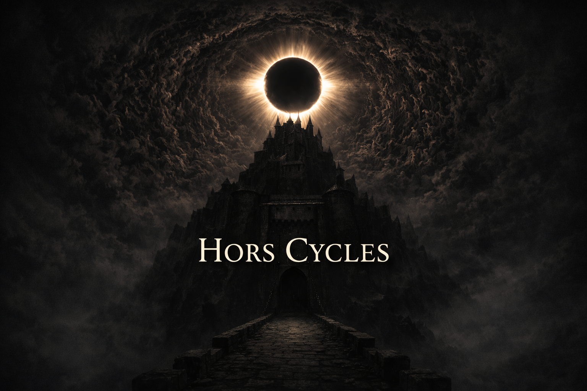

Projets
Grasse 1387 : Le miroir des juges
Une expérience narrative interactive de type Point & Click développée pour le futur Centre d'Interprétation de l'Architecture et du Patrimoine de Grasse.
Au cœur du palais épiscopal de Grasse en 1387, le visiteur mène une enquête mêlant archives, personnages historiques et exploration patrimoniale afin de faire émerger la vérité derrière un procès contesté.

Le Secret du Masque de Fer
Une expérience narrative immersive en réalité virtuelle au cœur du Fort Royal de l’île Sainte-Marguerite, plongeant le visiteur dans l’atmosphère carcérale et oppressante de l’époque du Masque de Fer.
Dans un royaume où le pouvoir est prêt à tout pour préserver ses secrets, le visiteur mène l’enquête à travers les cellules, les couloirs et les récits oubliés du fort afin de tenter de découvrir l’identité du mystérieux prisonnier au masque.

Hors Cycles
Une fiction interactive immersive où chaque choix façonne votre destinée dans un monde plongé dans une éclipse permanente.
Privé d'images, le récit laisse place à l'imagination. Portée par une mise en scène sonore et une écriture cinématographique, l'expérience invite le joueur à vivre l'histoire plutôt qu'à simplement la lire.

Contact
Actuellement en stage de fin d'études à la Maison du Patrimoine de Grasse, je développe des expériences interactives mêlant narration, recherche historique et valorisation du patrimoine.
Je recherche aujourd'hui une opportunité professionnelle au sein d'un studio ou d'une structure développant des expériences culturelles, historiques ou narratives innovantes.